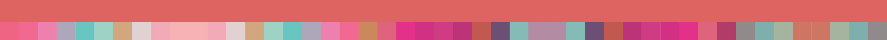

2019. ILUSTRARE. México
El expresionismo es sin duda un término complejo, extenso y bastante difícil de precisar. Ha pasado a formar parte del lenguaje común y, hoy en día, a cualquier artista que distorsione las formas de modo exagerado o aplique la pintura de una manera subjetiva, intuitiva y espontánea, se le considera “expresionista”. Aunado a esto, de todos los “ismos” surgidos a comienzos del siglo XX, el expresionismo es uno de los más difíciles de definir pues no constituyó un movimiento o estilo aglutinante, incluso si queremos agrupar, los modos en que se manifestó fueron numerosos y bastante diversos. Grupos y artistas se hallan dispersos en el tiempo y en el espacio y difieren en sus orígenes y formación. La única manera de llegar a su compresión, es a partir de sus contenidos. Y de entrada se puede decir que el expresionismo es un arte de oposición. Nace sobre la base de protesta y crítica y es, o pretende ser lo opuesto al positivismo, corriente o escuela filosófica que a inicios del siglo XX daba un tinte de espiritual entusiasmo a la sociedad burguesa en su fase de prepotente desarrollo económico y control político. Los expresionistas ya no se sentían vinculados ni a los conceptos ni a las dificultades de la psique burguesa y capitalista. En el fondo más que el cientifismo positivista, lo que molestaba a los expresionistas era el tono de felicidad y de ligereza de la Belle Époque. El nuevo estilo de vida, vacío y frívolo, no exento de atractivos, es duramente criticado por los representantes del expresionismo, que ponen de relieve sus límites y su hipocresía. Fue sobre todo en Alemania donde el fenómeno expresionista encontró terreno fértil; el régimen imperial, feudal y militarista de Guillermo II acentuaba las modernas contradicciones sociales y políticas. Fue allí donde se convirtió en un estilo de vida y donde asumió sus formas más radicales e influyentes.
2019. ILUSTRARE. México